Montato a vista.
Abra mostra come è fatto il lavoro prima che il cliente firmi. Il marchio lascia aperto il giunto tra la pancia e l'asta della a; le pagine sono montate con pannelli separati da una fessura.
Chi valuta un robot vuole vedere di che cosa è fatta la proposta prima di firmarla.
Il documento prima di tutto
La copertina del preventivo dice nella metà alta cosa il cliente sa prima di investire e cosa gli resta in mano. La pagina delle fasi ha criteri, costi, limiti e la riga per chiudere ogni fase.
I pezzi in vista
Pannelli rettangolari separati da un giunto costante: si vede la struttura prima di leggere. È la stessa regola della a del marchio, con la pancia staccata dall'asta.
Qualunque robot
I robot entrano su un pannello grigio con il cartellino dei dati. Cambiando marca o togliendo il robot, il sistema resta.
La a con il giunto aperto.
"abra" è disegnato a mano. La b e la r sono chiuse; le due a hanno la pancia staccata dall'asta di 16 unità su 240 di altezza x, il 6,7%. Il giunto è il tratto proprietario e resta in monocromia e a 16 px.
File in logo/, SVG scritti a mano senza testo; rigenerabili con _strumenti/build2.js.
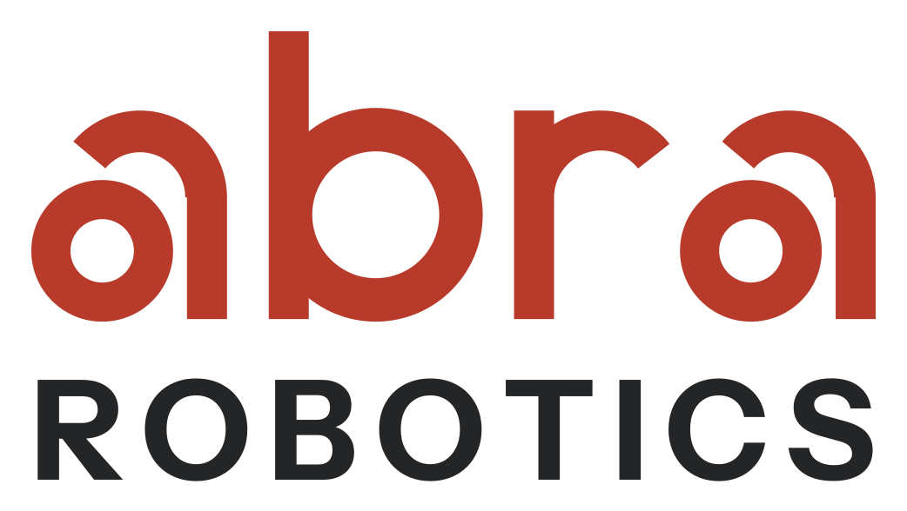
Verticale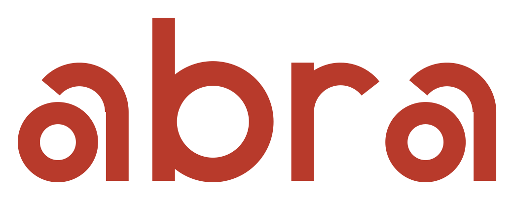
Logotipo, sotto i 160 px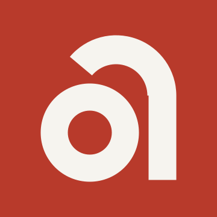
Monogramma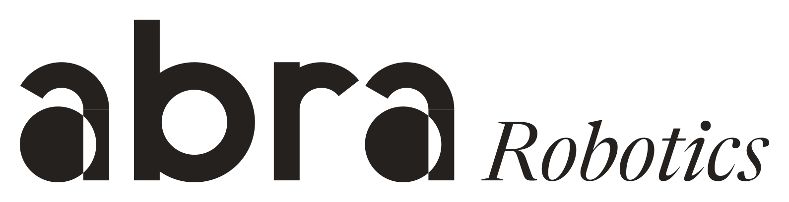
Mono positivo
Negativo su grafiteProva alle dimensioni reali con il confronto tra v1 e v2: logo/test.html. Montaggio animato: logo/animazione.html.
Rosso Abra con ocra, su grigi da macchina per ufficio.
Un solo pannello rosso per superficie; l'ocra solo per esempi, limiti e contatti. CMYK da profilo, Pantone indicativi e contrasti calcolati in palette.md.
Instrument Sans
Titoli, interfaccia, dati. OFL, file statici in fonts/.
Crimson Pro
Testo da leggere e didascalie. OFL, file statici in fonts/. Il PDF del preventivo esportato senza rete incorpora solo questi due caratteri.
Pannelli, giunto, cartellino, fasi.
- Robot in prova
- Umanoide G1
- Altezza
- 130 cm
- Batteria
- circa 2 ore, sostituibile
Fasi
Limiti dichiarati
Carico continuo sotto i 2 kg per braccio. EsempioPersone al lavoro, robot su fondo neutro.
Le foto Abra sono documentarie e a colori naturali. Finché mancano, i robot dei produttori sono segnaposto dichiarati in grigio neutro, su un pannello con il cartellino dei dati; le persone degli eventi sono sagome.
Lo stesso montaggio, dal preventivo al totem.
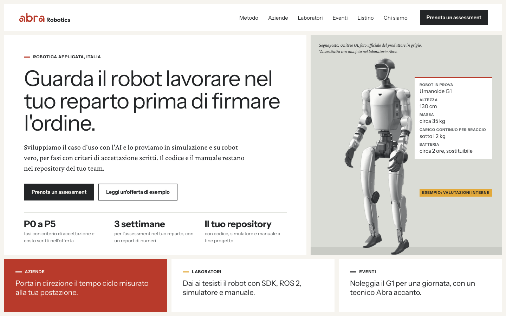
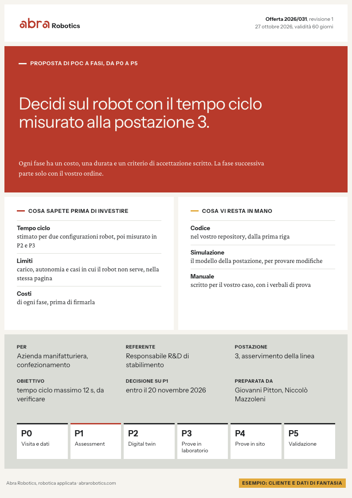
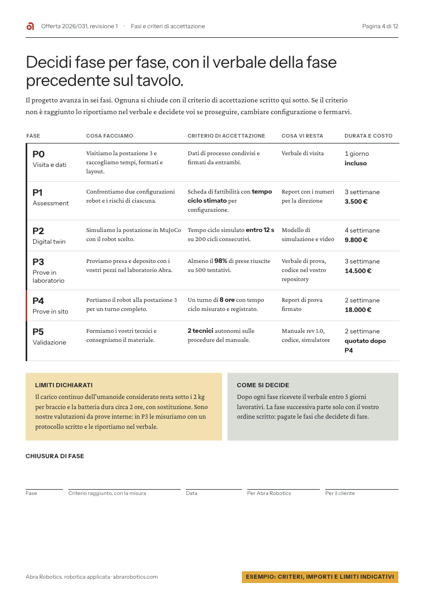
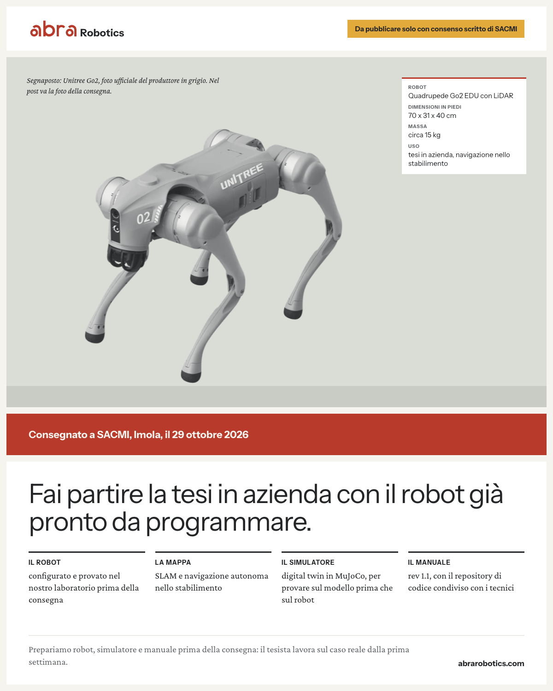
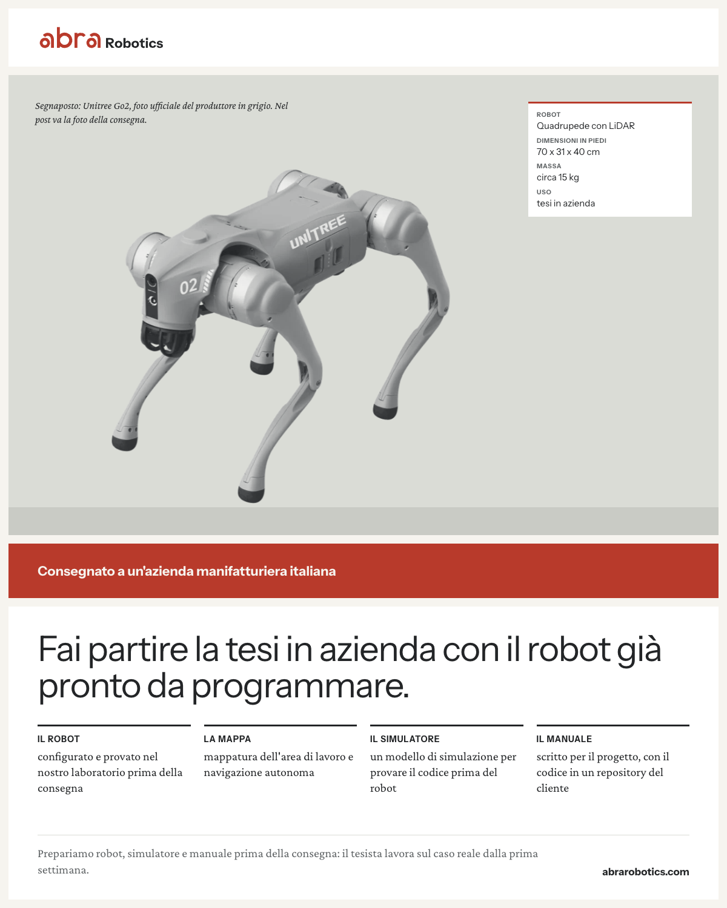
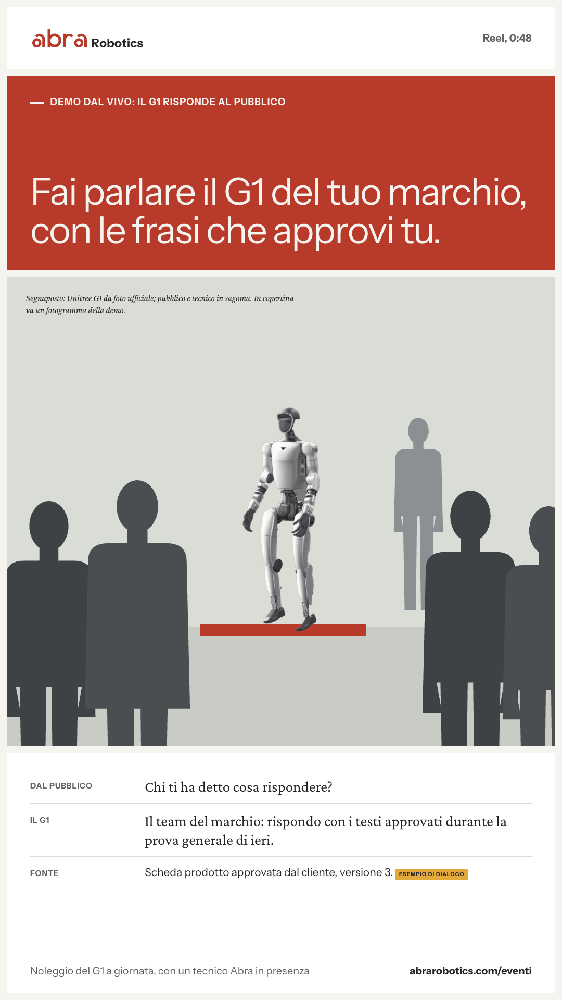
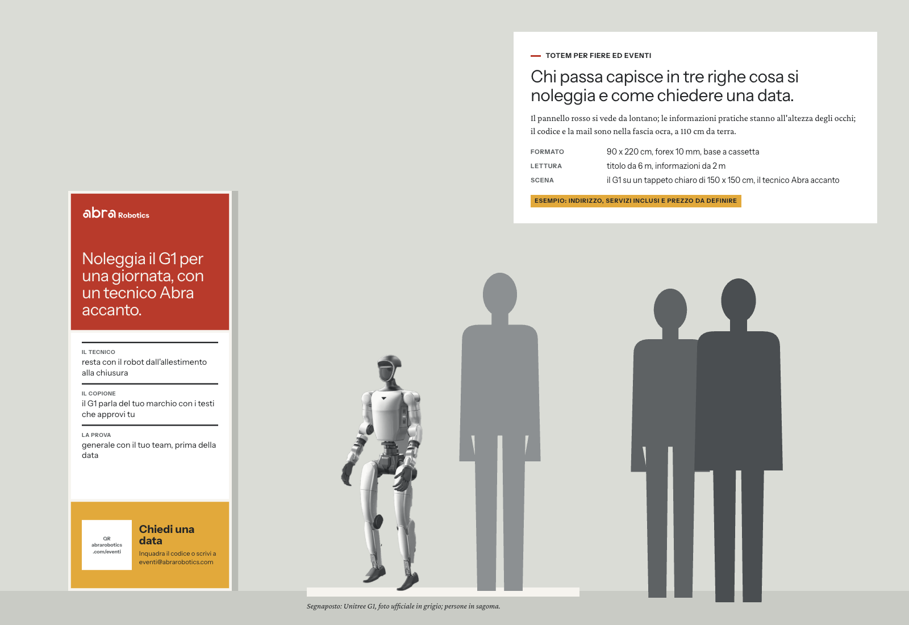
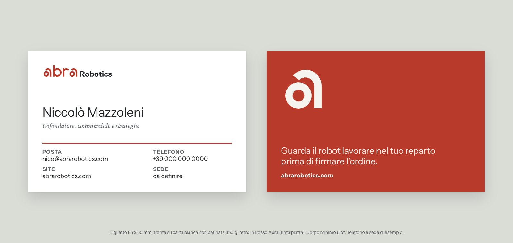
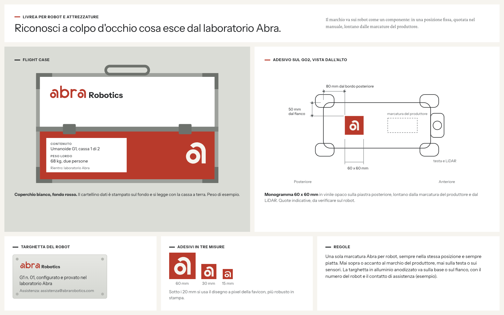
Frasi intere, numeri con le unità, limiti nella stessa pagina.
- HomeGuarda il robot lavorare nel tuo reparto prima di firmare l'ordine.
- PreventivoDecidi sul robot con il tempo ciclo misurato alla postazione 3.
- LaboratoriDai ai tuoi tesisti un robot già pronto da programmare.
- EventiFai parlare il G1 del tuo marchio, con le frasi che approvi tu.
- EnglishWatch the robot work in your own plant before you sign the order.
Il colpo d'occhio da manifesto della v1 e il calore pittorico. La memorabilità passa dal logotipo e dalla struttura a pannelli, il rosso compare in un pannello per pagina.
Le prime foto Abra al lavoro (la consegna SACMI del 29 ottobre è l'occasione, con consenso), il modello HTML del preventivo nel Company Brain con i font di fonts/, la scheda limiti del G1 con il protocollo di misura.